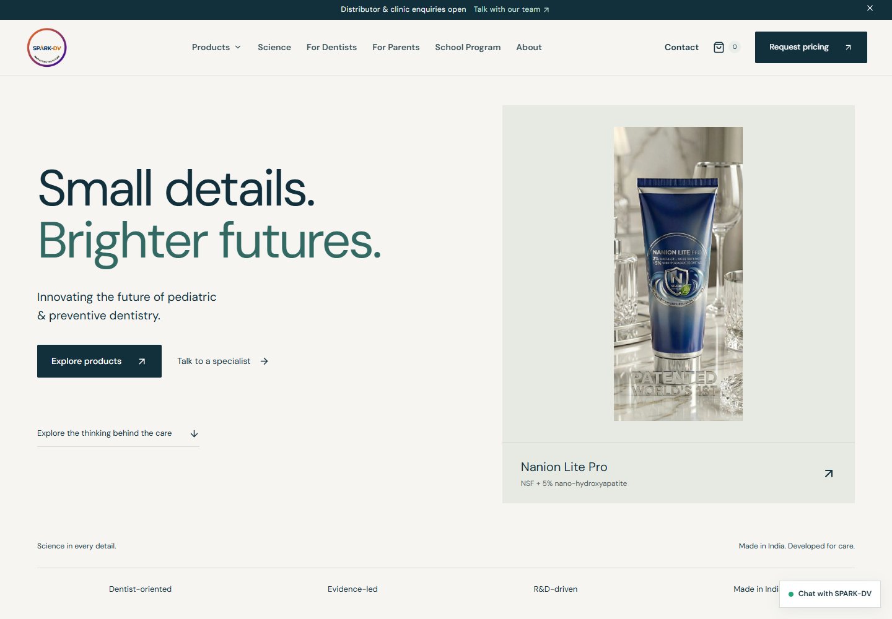
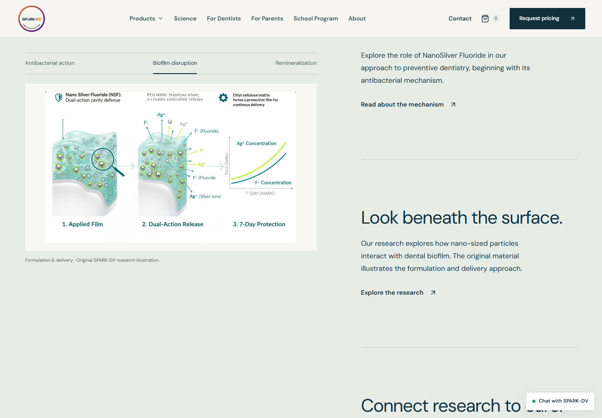
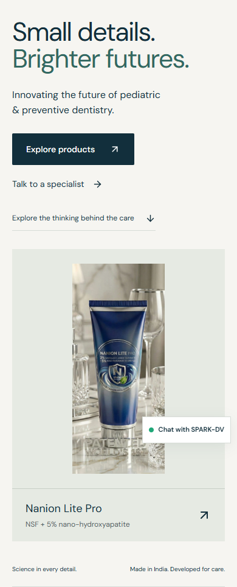

Open homepage ↗Editorial design. Homepage only.
The updated homepage combines an open typographic hero, original packaging photography, a scroll-linked research spread, and restrained image and testimonial transitions. No 3D models were added. Other routes retain their existing layouts.
Previous / updated homepage
 Previous split-panel hero.
Previous split-panel hero.
Open editorial hierarchy, complete original Nanion Lite Pro photograph and direct research navigation.Reference / original science story
 Stripe Press: a consistent visual paired with long-form editorial text. Reference evidence only.
Stripe Press: a consistent visual paired with long-form editorial text. Reference evidence only.
SPARK-DV: original illustrations change with their corresponding chapters. No models, new diagrams or replacement photography.Mobile

Stacked hero and complete product image.Explicit topic controls replace the desktop sticky sequence.Interaction and scope verification · Build and TypeScript checks pass. Original product shelves, reload logo reveal and simplified footer are preserved.